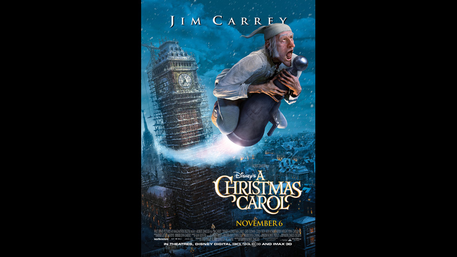

2009

CAST
Ebenezer Scrooge
-
Jim Carrey
Bob Cratchit
-
Gary Oldman
Mrs. Cratchit
-
Lesley Manville
Tiny Tim Cratchit
-
Gary Oldman
Fred (Scrooge's nephew)
-
Colin Firth
Fred's wife
-
Leslie Zemeckis
Belle (Scrooge's neglected fiancée)
-
Robin Wright Penn
Martha Cratchit
-
Fay Masterson
Belinda Cratchit
-
Molly Quinn
Peter Cratchit
-
Daryl Sabara
Marley's Ghost
-
Gary Oldman
Spirit of Christmas Past
-
Jim Carrey
Spirit of Christmas Present
-
Jim Carrey
Spirit of Christmas Future
-
Jim Carrey
Young Scrooge
-
Jim Carrey
Fan "Fanny" Scrooge
-
Robin Wright Penn
Fezziwig
-
Bob Hoskins
Mrs. Fezziwig
-
Jacquie Barnbrook
Old Joe
-
Bob Hoskins
Mrs. Dilber
-
Fionnula Flanagan
Funerary Undertaker
-
Steve Valentine
Undertaker's Apprentice
-
Daryl Sabara
Topper
-
Steve Valentine
Fat Cook
-
Julian Holloway
Dick Wilkins
-
Cary Elwes
CREATIVE TEAM
Director
-
Robert Zemeckis
Screenplay
-
Robert Zemeckis
PRODUCTION
A 2009 American 3D computer animated motion-capture dark fantasy film written, co-produced, and directed by Robert Zemeckis and starring Jim Carrey in a multitude of roles, including Ebenezer Scrooge as a young, middle-aged, and old man, and the three ghosts who haunt Scrooge.
The film received mixed reviews from critics, who praised its visuals and the performances of Carrey and Oldman but criticized its dark tone. It earned $325.3 million on a $175–200 million budget. The 3D film was produced through the process of motion capture, a technique Zemeckis previously used in his films The Polar Express (2004) and Beowulf (2007).